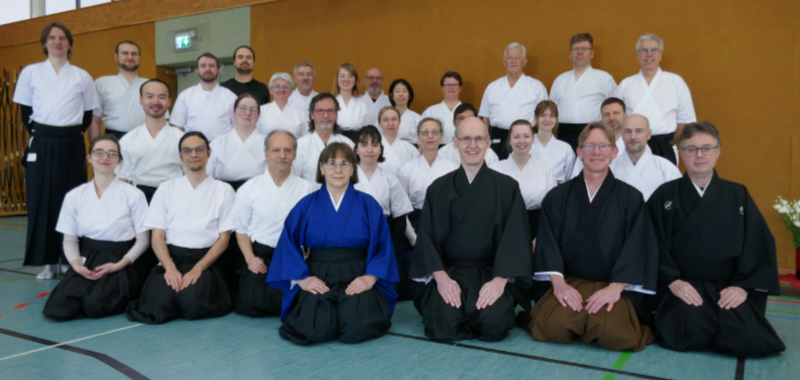

Offenes Heki Sommerseminar in Rottweil, August 2025:
Im Rottweiler Shu Gi Kan Kyu Dojo fand diese Jahr wieder ein intensives Heki Sommerseminar mit
Harada Sensei statt. Ein herzliches Dankeschön an Lehrer,
Organisatoren und Teilnehmer für das gelungene Seminar.

Harada Sensei mit den Teilnehmenden aus Nagold.
Prüfung in Nagold, 27. Juli 2025:
Martin und Heiko bestehen ihre Prüfung zum 5. Kyu.
Wir gratulieren sehr herzlich zu diesem Erfolg und wünschen alles Gute für den weiteren Kyudoweg.
Anfängerkurs Frühjahr, 15. Juli 2025:
Der Anfängerkurs ist beendet worden. Wir begrüßen unser neues Vereinsmitglied Axel sehr herzlich
und wünschen ihm viel Freude, Geduld und jede Menge Erkenntnisse auf seinem Weg des Bogens.
Einführungskurs ab 04. Mai 2025:
Am Sonntag, den 04. Mai, startet unser Schnupperkurs im Japanischen Bogenschießen.
Nähere Informationen sowie die Möglichkeit zur Anmeldung sind in der Rubrik "Kurse" zu finden.
Alle Interessenten sind auch ohne Vorankündigung zum ersten Infotag herzlich willkommen.
Prüfungslehrgang in Erlangen, 02. März 2025:
Snezi besteht Ihre Prüfung zum 1. Kyu.
Wir gratulieren sehr herzlich zu diesem Erfolg und wünschen alles Gute für den weiteren Kyudoweg.

Foto: Daniela Tretter/Stefan Brendel

Foto: Daniela Tretter/Stefan Brendel
1. Runde der Bundesliga im Jahr der Schlange, 23. Februar 2025:
In der ersten Runde der Bundesliga 2025 haben wir folgende Treffer erzielt:
Team "Fugu": Betty 0/8, Snezi 4/12, Peter 5/12 und Duy 1/4 - gesamt 10/36.
Die nächste Runde der Bundesliga muss bis Ende April erfolgen.
Frohe Weihnachten, 25. Dezember 2024:
Wir wünschen allen Kyudofreunden erholsame Weihnachtsfeiertage und einen guten Start
in das neue Jahr der Schlange.
Anfängerkurse im Jahr des Drachens, Dezember 2024:
Die beiden diesjährigen Anfängerkurse sind beendet worden. Wir begrüßen unsere neuen Vereinsmitglieder Heiko und Justin sehr herzlich
und wünschen Ihnen viel Freude, Geduld und jede Menge Erkenntnisse auf Ihrem Weg des Bogens.
4. Runde der Bundesliga im Jahr des Drachens, 22. September 2024:
In der vierten Runde der Bundesliga 2024 hat unser Team folgende Treffer erzielt:
Team "Nagold Dragons": Michael SH. 3/12, Michael W. 2/12 und Duy 2/12 - gesamt 7/36.
Herzlichen Glückwunsch.
Wir wünschen Michael S.H. und Michael W. gutes Vorankommen auf Ihrem Weg des Bogens im Budo-Zentrum Rottweil e.V. und freuen uns auf ein Wiedersehen bei den nächsten Seminaren.
Hekiseminar II für Matoschützen in Bad Dürkheim, 12.-13. Oktober 2024:
Der Verein Kyudo Bad Dürkheim e.V. richtet im Oktober ein Heki-Seminar unter der Leitung von Fritz Eicher aus.
Anbei findet Ihr die Ausschreibung und das
Anmeldeformular .
Landeslehrgang zur Prüfungsvorbereitung in Bad Dürkheim, 23.-24. November 2024:
Der Verein Kyudo Bad Dürkheim e.V. richtet einen Landeslehrgang zur Prüfungsvorbeitung unter der Leitung von Fritz Eicher aus.
Eine Prüfungsteilnahme bis einschließlich 1. Kyu ist möglich.
3. Runde der Bundesliga im Jahr des Drachens, 23. Juni 2024:
In der dritten Runde der Bundesliga 2024 hat unser Team folgende Treffer erzielt:
Team "Nagold Dragons": Michael SH. 5/12, Michael W. 1/12 und Duy 5/12 - gesamt 11/36.
Herzlichen Glückwunsch.
Heki-Sommerseminare in Stuttgart, Juli 2024:
Zwei unserer Heki-Sommerseminare für sichere Matoschützen ab dem 4. Kyu werden
dieses Jahr vom Kyudojo Stuttgart e.V. ausgerichtet.
Seminar 1: Freitag, den 12.07. bis Sonntag, den 14.07.2024.
Seminar 2: Dienstag, den 16.07. bis Donnerstag, den 18.07.2024.
1. Runde der Bundesliga im Jahr des Drachens, 22. März 2024:
In der ersten Runde der Bundesliga 2024 hat unser Team folgende Treffer erzielt:
Team "Nagold Dragons": Michael SH. 2/12, Michael W. 1/12 und Duy 3/12 - gesamt 6/36.
Unser zweites Team Fugu konnte leider aus gesundheitlichen Gründen noch nicht antreten.
Die nächst Runde der Bundesliga muss bis Ende Mai erfolgen.
19. Baden-Württembergischen Einzel- und Mannschaftsmeisterschaft in Stuttgart, 18. März 2024:
Am Sonntag, den 18. März fand die diesjährige Landesmeisterschaft im Stuttgarter Kyudojo statt.
Erstmalig dabei war unser Team "Nagold Dragons".
Den Meistertitel holte sich die Mannschaft Stuttgart 1, vor Karlsruhe 1 und Rottweil.
Die "Nagold Dragons" belegten den 10. Platz, Wettkampf lernt man nur durch Wettkampf :-). Herzlichen Glückwunsch.

Foto: Marion Moritz
Das Jahr des Drachen, Februar 2024:


Die Kyudogruppe des VfL Nagold begrüßt das Jahr des Drachen.
Michael W. und Snezi haben das Fabelwesen fixiert.
Vielen Dank Michael SH. für das schöne Drachen-Mato.
Offenes Heki Sommerseminar in Rottweil, August 2023:
Im Rottweiler Shu Gi Kan Kyu Dojo fand diese Jahr wieder ein lehrreiches Heki Sommerseminar mit
Matsuo Sensei und seiner studentischen Hilfskraft Herrn Sakamoto statt. Ein herzliches Dankeschön an Lehrer, Übersetzer,
Organisatoren und Teilnehmer für das sehr schöne, gelungene Seminar.

Foto: Marion Moritz

Teilnehmer aus Nagold: Snezi, Michael, Peter, Betty
Endergebnisse der Bundesliga im Jahr des Tigers, 09. November 2022:
Bei der Bundesliga 2022 wurden durch unsere Teams folgende Platzierungen erzielt:
Team "Michi": Snezi 4/48, Svenja 13/48 und Betty 27/48. Platz 48
Team "Nagold Tigers": Duy 10/36, Michael W. 2/16, Michael SH. 9/44 und Peter 20/48. Platz 55
Herzliche Glückwünsche an die teilnehmenden Schützinnen und Schützen.
Überflüssig zu erwähnen: Ein klarer Sieg für die Frauenmannschaft :-).
Teilgenommen haben im gesamten Bundesgebiet insgesamt 87 Mannschaften.
Erster Kyudo-Landeslehrgang in Nagold, 22. Oktober 2017:
Nach ihrer Gründung im Juli 2016 war die Kyudo-Abteilung des VfL-Nagold e.V. der Ausrichter des
ersten Baden-Württembergischen Landeslehrganges für die Freunde des japanischen Bogenschießens in Nagold.
Gegen 11:00 Uhr konnte Peter Knipper (4. Dan Kyudo) die insgesamt 17 Teilnehmer als Lehrgangsleiter und Trainer begrüßen.
Die elf externen Teilnehmer verteilten sich auf die Bundesländer NRW (2), Hessen (2) Baden Württemberg (6) und Bayern (1).
Mit gut einem gut organisierten und straffen Zeitplan ging es dann für Rolf Gückel (2. Dan Kyudo) und Peter Knipper an die
Arbeit sprich, Analyse des Vorschießens jedes einzelnen Teilnehmers und nachfolgende Korrekturempfehlung.
Die Themen umfassten hauptsächlich die Grundlagen zur Erlangung einer stabilen Körperform während des
Aufspannens des gro?en asymmetrischen japanischen Langbogens, die korrekte Ausrichtung der Achsen von Hüfte,
Wirbelsäule und Schultergürtel. Auch gab es theoretische Unterweisungen mit vor Ort erstellten Skizzen
von diesen Zusammenhängen. Erläutert wurde auch das Te no uchi: Die Art und Weise wie die linke Hand den Bogen ergreift und hält.
Eine ausreichende Anzahl von Pausen mit Verpflegung dienten dem gegenseitigen Kennenlernen und Erfahrungsaustausch.
Die Teilnehmer haben die Veranstaltung mit gro?er Zufriedenheit absolviert und wünschten sich einhellig eine
Wiederholung im nächsten Jahr.
An dieser Stelle möchten wir uns ganz herzlich für die großzügigen Spenden und die
Unterstützung aller Vereinsmitglieder bedanken. Ein ganz besonderer Dank geht an Jürgen, der
uns beim Auf- und Abbau tatkräftig unterstützt und sich darüberhinaus den ganzen
Tag unermüdlich um all unsere Leckereien gekümmert hat.
Gründung der Kyudogruppe Nagold, 15. Juli 2016:
Nach einer langen Anlaufphase ist im Juli die Kyudogruppe des VfL Nagold e.V. ins Leben gerufen worden. Wir danken dem VfL für die Unterstützung.